信号のマージ
この対話型のデモでは、次の Simulink® の概念を紹介します。
目次
モデルの説明
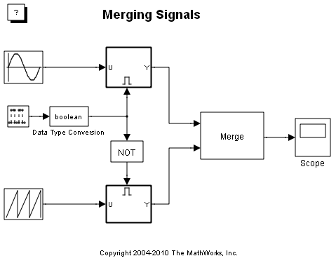このモデルの左側には、Simulink Sources ライブラリからのブロック (たとえば Repeating Sequence ブロックなど) が 2 つ含まれています。各ブロックは、そのブロックのアイコンに表示されている形式のスカラー出力信号を生成します。
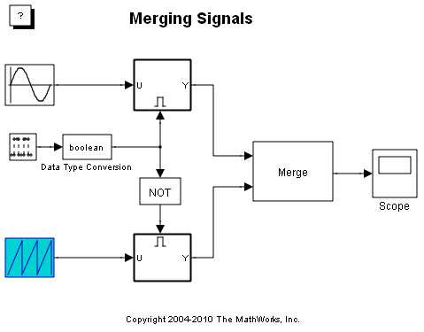この 2 つの信号は、異なる Enabled Subsystem に入力されます。これらの Subsystem は太線で縁取られています。
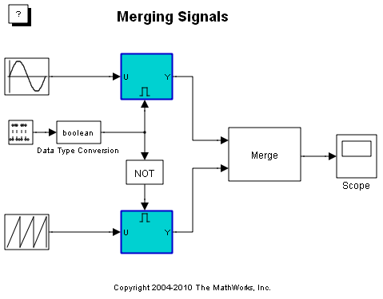これらの Enabled Subsystem (つまり、条件付きで実行される Subsystem) は、Discrete Pulse Generator ブロックが生成する信号によって制御されます。
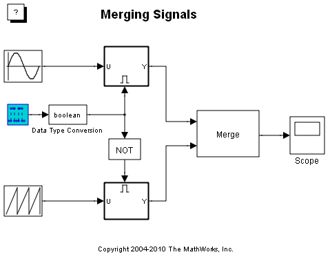このブロックの出力は、5 秒ごとに交互に値 0 と値 1 に切り替わります。Discrete Pulse Generator ブロックの出力が正のときは、上の Enabled Subsystem がシミュレーションを実行しています。Discrete Pulse Generator ブロックの出力が 0 のときは、下の Enabled Subsystem がシミュレーションを実行しています。
Discrete Pulse Generator ブロックの出力が 0 のときに下の Enabled Subsystem にシミュレーションを実行させるために、出力は NOT 演算子に設定された Logical Operator ブロックを通されます。NOT ブロックは、入力が 0 のときに値 1 を出力します。
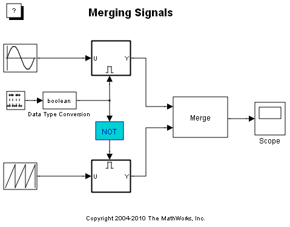この 2 つの Enabled Subsystem の出力は、Merge ブロックに入力されます。
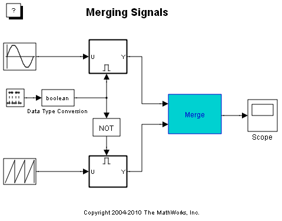最終的に、Merge ブロックの出力が Simulink Scope に表示されます。
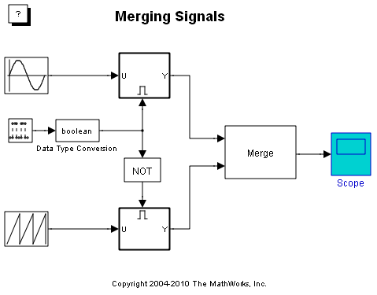シミュレーションを実行して、Scope で Merge ブロックの出力を確認できます。Scope に表示される波形のタイプが 5 秒ごとに変化することを確認してください。これは、Merge ブロックの動作によるものです。
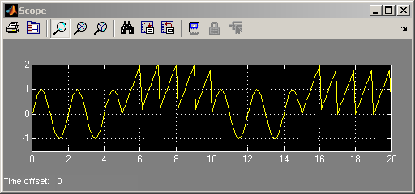条件付きで実行される Subsystem
Merge ブロックのデモには、条件付きで実行される Subsystem が 2 つ含まれています。
条件付きで実行される Subsystem とは、シミュレーション中の特定の時期にのみ、つまり、特定の条件が満たされた場合にのみ実行される Subsystem のことです。この場合、条件付きで実行される Subsystem は Enabled Subsystem です。これらの Subsystem は、以下に示すように、それぞれのアイコンと、ブロックの上部または下部に表示される追加の入力端子によって識別できます。
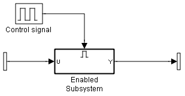追加の端子に入る信号は、制御信号と呼ばれます。この信号の値によって、その Subsystem が任意のタイム ステップで実行されるかどうかを決定する条件が与えられます。Enabled Subsystem は、制御信号が厳密に正であるときに実行されます。
このデモでは、制御信号が正のときに 1 方の Enabled Subsystem を実行し、制御信号が 0 のときにもう一方の Enabled Subsystem を実行する必要があります。これは、Simulink の Logical Operator ブロックを使用して実行することができます。
Logical Operator ブロック
Simulink の Logical Operator ブロックを使用すると、Simulink ブロック線図に論理演算子と論理信号を組み込むことができます。
Logical Operator ブロックを開いて、ドロップダウン メニューに示されるさまざまな演算子を確認できます。NOT の現在の設定では、入力信号が非ゼロのときは 1 (TRUE) が返され、入力信号が厳密にゼロのときは 0 (FALSE) が返されます。
この例では、この機能を使用して、制御信号がゼロになったときに正の値を生成できます。そのためには、NOT の現在の演算子設定をそのまま維持して、ダイアログ ボックスを閉じます。
メモ:各信号のデータ型は、Simulink ブロック線図の [書式] > [端子/信号の表示] メニューの [端子のデータ型] をオンにすると表示できます。
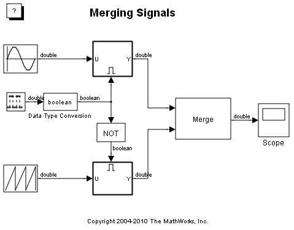Simulink® での論理信号
次の手順に従って、Simulink が Logical Operator ブロックの入出力に論理値または倍精度値を使用するようにすることもできます。
1. [シミュレーション] メニューから [コンフィギュレーション パラメーター] を選択して、[コンフィギュレーション パラメーター] ダイアログ ボックスを開きます。
2. [コンフィギュレーション パラメーター] ダイアログの [最適化] ページに移動します。
3. [論理信号を論理データ (対倍精度) として実装] パラメーターが有効になっていることを確認します。この最適化によって、論理データ型をサポートするブロックにデータ型が倍精度の信号を入出力できるようにするかどうかを Simulink に示します。
4. [コンフィギュレーション パラメーター] ダイアログ で [OK] をクリックします。
Data Type Conversion ブロックを Discrete Pulse Generator ブロックの後ろに配置することにより、Logical Operator ブロックに論理入力信号が必要であることを示すエラーを回避します。
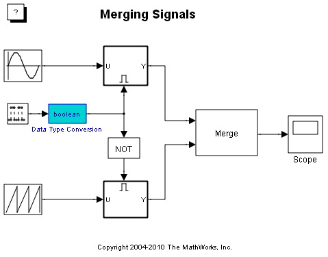Merge ブロックおよび交互に有効になる Subsystem
Merge ブロックを使用して、現在実行されている方の Enabled Subsystem の出力と等しい値を持つ単一の信号を作成できます。以下の手順を実行します。
1. Merge ブロックをダブルクリックして、このブロックの [ブロック パラメーター] ダイアログを開きます。
2. マージ対象の出力を持つ Enabled Subsystem の数として [入力数] を指定します。この場合、*[入力数] * は 2 に設定する必要があります。
3. Merge ブロックが初期出力を入力信号のいずれかの初期値に設定することを指定するため、[初期出力] フィールドは空のままにします。この場合、出力は、シミュレーションの開始時に有効になっている Subsystem の初期値になります。
4. Merge ブロックの [ブロック パラメーター] ダイアログを閉じます。
5. 条件付きで実行される 2 つの Subsystem の出力を Merge ブロックの入力に接続します。
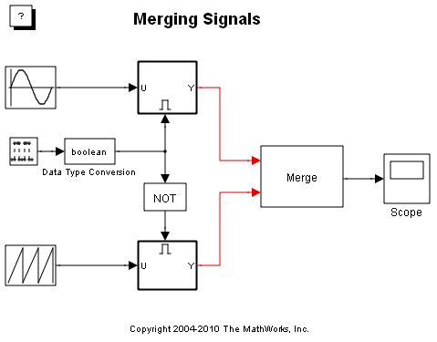シミュレーションを実行すると、これまでどおり、Merge ブロックの出力は、条件付きで実行される 2 つの Subsystem のうち、その時点で実行されている方の Subsystem の値となります。
興味深い機能:ブロックの背景色のプログラム的な変更
シミュレーションを実行したときに、条件付きで実行される Subsystem のうち、現在実行されている方の色が変化したことに気付いたはずです。これは、条件付きで実行される Subsystem のすべてに対して自動的に行われることではありません。これは、S-function と MATLAB® コードを使用して行われたことです。
Simulink ブロック線図内のブロックをダブルクリックして Enabled Subsystem のいずれかを開くと、その Enabled Subsystem には、次のブロックが含まれています。
1. Enable ブロック。このブロックは、これを条件付きで実行される Subsystem にして、制御信号の入力端子を追加するものです。
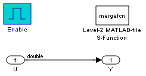2. Level-2 MATLAB-file S-function ブロック。このブロックは、MATLAB ファイル S-function である mergefcn.m を実行します。
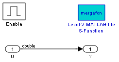各タイム ステップで、S-function のサブ関数 mdlUpdate が実行されます。このサブ関数は次のコマンドを使用して、Subsystem が現在実行されているかどうかに基づいて、Subsystem の BackgroundColor プロパティを設定します。
set_param('mergedemo/Subsystem','BackgroundColor','green')
MATLAB ファイル S-function の記述方法の詳細は、ドキュメンテーションを参照してください。